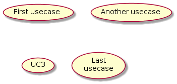
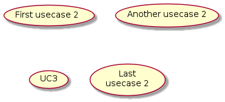
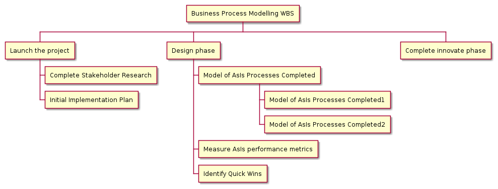

Fonte: dockerfiles/intmain_docmd
Introdução
Ferramenta para geração de documentação em formato markdown.
Uso
onde tipo pode ser:
bashc++coffeeconfgrdbmakefilenginxpythonrubyscsssystemdvimyaml
Se nenhum argumento for fornecido o programa imprime a ajuda e finaliza a execução.
Detalhes
if ARGV.empty?
puts """
Gerador de documentação em formato Markdown
intmain_docmd tipo arquivo_fonte arquivo_markdown
tipo: vim, bash, python, ruby, coffee, makefile, grdb, nginx, scss, conf, c++, systemd, yaml
Para alterar o comportamento da ferramenta utilize as seguintes variáveis de ambiente:
INTMAIN_DOCMD_DETAILS=false desabilita a tag details
INTMAIN_DOCMD_TOC=false desabilita a geração de sumário
INTMAIN_DOCMD_SHOW_SOURCE=false desabilita a identificação do arquivo fonte
"""
exit
end
Exemplo real
A documentação deste projeto é mantida utilizando-se o intmain_docmd:
intmain_docmd ruby bin/intmain_docmd doc/10_Gerador_de_documentação_intmain_docmd.md
intmain_docmd bash bin/intmain_resize_screenshots doc/20_Redimensionador_de_screenshots.md
intmain_docmd bash scripts/Common/intmain.bash doc/20_Biblioteca_de_scripts_intmain.md
intmain_docmd bash scripts/Common/taoker.bash doc/21_Biblioteca_de_scripts_taoker.md
intmain_docmd bash scripts/Common/common.bash doc/30_Biblioteca_de_funções_bash.md
intmain_docmd makefile scripts/Common/Makefile.include doc/40_Biblioteca_de_alvos_make.md
Variáveis de controle
INTMAIN_DOCMD_DETAILS: ativa/desativa o encapsulamento dos trecho de códigoINTMAIN_DOCMD_TOC: ativa/desativa a geração do índiceINTMAIN_DOCMD_SHOW_SOURCE: exibe o nome do arquivo de origem
Detalhes
Callout numbers
Para referenciar comandos use itens numerados, p. e. ❶, para indicar uma linha no meio do código.
Detalhes
def expand_shortcuts(text)
callout_numbers = { "❶" => "❶", "❷" => "❷", "❸" => "❸",
"❹" => "❹", "❺" => "❺", "❻" => "❻",
"❼" => "❼", "❽" => "❽", "❾" => "❾",
"❿" => "❿", "⓫" => "⓫", "⓬" => "⓬",
"⓭" => "⓭", "⓮" => "⓮", "⓯" => "⓯",
"⓰" => "⓰", "⓱" => "⓱", "⓲" => "⓲",
"⓳" => "⓳", "⓴" => "⓴" }
callout_numbers.each{ |k,v| text = text.gsub( k, v ) }
text
end
Inclusão de diagramas com plantuml
Os trechos em plantuml a seguir serão substituídos pela imagem do diagrama.


